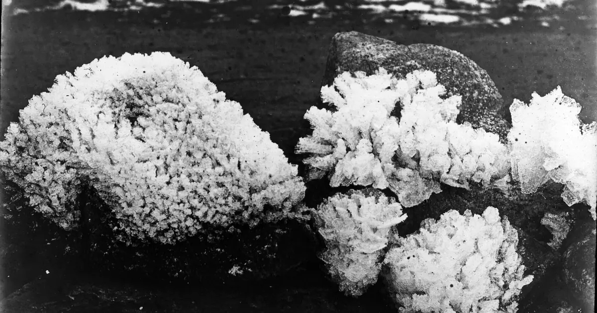
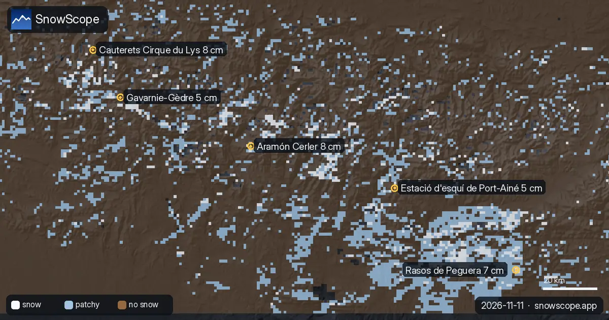

Grandvalira : une bonne idée pour skier en décembre avec un petit budget ?
L'Andorre a la réputation d'être une destination de ski bon marché : Grandvalira est-elle un bon pari pour décembre ? Notre historique de neige sur 46 hivers passés (1980-81 à 2025-26) montre que la neige naturelle est maigre en bas tout le mois et que début décembre n'est pas fiable. Le voyage vaut le coup fin décembre, en restant en altitude, avec un forfait acheté en ligne.
Consultez les prévisions neige en temps réel pour Grandvalira sur l'application SnowScopeHauteurs de neige, alertes poudreuse et carte 3D, gratuitement.La promesse face aux chiffres de la neige
Grandvalira, en Andorre, est un grand domaine : la zone cartographiée compte 137 km de pistes et 53 remontées entre 1 674 m et 2 619 m. C'est rassurant, jusqu'à ce qu'on regarde la neige naturelle par altitude dans notre historique. En bas des remontées, à 1 674 m, l'épaisseur habituelle en décembre est de 9 cm ; un décembre maigre, 1 hiver sur 10, est proche de 0 cm, et un décembre généreux dépasse 28 cm.
À mi-montagne, à 2 146 m, la neige habituelle en décembre est de 27 cm, variant de moins de 2 cm lors d'un hiver pauvre à plus de 63 cm lors d'un hiver enneigé. Au sommet, à 2 619 m, l'épaisseur habituelle est de 45 cm, allant de moins de 5 cm à plus de 101 cm lors des hivers généreux. Le 15 décembre, l'épaisseur habituelle est de 8 cm à la base, 25 cm à mi-montagne et 42 cm au sommet.
Le 13 novembre, l'estimation de neige est de 0 cm aux trois altitudes, avec 0 cm de neige fraîche prévue les 7 prochains jours à la base et à mi-montagne, et 3 cm au sommet. Les prévisions à deux semaines jusqu'au 26 novembre pour la mi-montagne et au-dessus sont de 2 à 17 cm, avec 10 cm en moyenne, ce qui montre un début de saison lent.

Quelle semaine de décembre choisir pour avoir de la neige
Les parts semaine par semaine montrent pourquoi le début décembre est risqué. À la base (1 674 m), la neige atteint 30 cm ou plus dans seulement 2 % des hivers passés entre le 1er et le 7 décembre, et 7 % pour chacune des trois semaines suivantes, alors que 50 cm ou plus n'arrivent jamais (0 %). À mi-montagne (2 146 m), 30 cm ou plus surviennent dans 30 %, 41 %, 50 % et 65 % des hivers sur ces quatre semaines.
Le sommet des remontées à 2 619 m est l'endroit où décembre devient fiable plus tard. Du 1er au 7 décembre, 30 cm ou plus sont présents dans 43 % des hivers et 50 cm ou plus dans 28 %. Du 8 au 14 décembre, ces parts montent à 57 % et 39 %, puis 63 % et 48 % du 15 au 21 décembre, et 76 % et 63 % du 22 au 28 décembre.
Le vrai coût du forfait
Pour le lundi 14 décembre 2026, le site officiel de Grandvalira affiche un forfait adulte (18-64 ans) 1 jour acheté en ligne à 62,50 EUR, tandis que le prix aux guichets est de 72,00 EUR. Les prix varient selon les dates, donc réserver tôt en ligne fait une vraie différence. Les autres frais n'ont pas été vérifiés, donc un forfait moins cher ne garantit pas des vacances à petit prix.
Grandvalira comparée à Baqueira Beret
En Espagne, le domaine skiable de Baqueira Beret compte 154 km de pistes et 36 remontées de 1 504 m à 2 600 m. Pourtant, Grandvalira a une neige naturelle plus épaisse en décembre sur l'ensemble du domaine. L'épaisseur habituelle en décembre à Baqueira est de 8 cm à la base, 20 cm à mi-montagne à 2 052 m et 30 cm au sommet à 2 600 m. À mi-montagne, Baqueira atteint 30 cm ou plus dans 22 %, 30 %, 35 % et 41 % des hivers sur les quatre semaines de décembre. Au sommet, il atteint 30 cm ou plus dans 39 %, 46 %, 52 % et 59 % des hivers, et 50 cm ou plus dans 13 %, 22 %, 30 % et 37 %.
Pour la saison 2026-27, le site officiel de Baqueira Beret affiche un forfait adulte 1 jour à 74,00 €, un forfait 1 jour avec la carte rechargeable Baqueira Pass à 70,00 €, et un forfait 6 jours à 359,00 €. Le prix en ligne de 62,50 EUR pour Grandvalira le 14 décembre est inférieur aux tarifs de Baqueira Beret. Cependant, le tarif guichet de 72,00 EUR de Grandvalira se situe entre les deux, et les prix de Grandvalira changent selon les dates.
Les mois de décembre récents sont-ils moins enneigés qu'avant
En comparant les 15 premiers hivers (1980-81 à 1994-95) avec les 15 derniers (2011-12 à 2025-26), la moyenne de mi-décembre est restée à 8 cm à la base, est passée de 21 cm à 25 cm à mi-montagne, et a grimpé de 35 cm à 41 cm au sommet. Malgré cela, le mois de décembre dernier (2025-26) était en dessous de cette moyenne récente, avec 8 cm à la base, 19 cm à mi-montagne et 32 cm au sommet. Les variations d'une année à l'autre restent importantes : 1989-90 est tombé à 1 cm à mi-montagne et au sommet, tandis que 1996-97 a atteint 35 cm, 82 cm et 129 cm.
Conseils aux skieurs
- Visez la période du 22 au 28 décembre si vous pouvez, quand le sommet à 2 619 m atteint 30 cm ou plus dans 76 % des hivers passés et 50 cm ou plus dans 63 %.
- Prévoyez de skier entre 2 146 m et 2 619 m, car la base à 1 674 m n'a qu'une moyenne de 9 cm en décembre.
- Réservez votre forfait sur le site officiel de Grandvalira pour payer 62,50 EUR au lieu de 72,00 EUR pour le 14 décembre, et vérifiez les prix pour vos dates exactes.
- Consultez la bulletin des avalanches avant toute sortie hors-piste, surtout quand la couche de neige est fine en début de saison.
Autres cartes (sites externes)
Références et crédits
- Grandvalira, official ski pass booking (online price for 14 December 2026, read 2026-11-13) www.grandvalira.com/en/ski-pass/day
- Baqueira Beret, official prices (tarifas), season 26-27 www.baqueira.es/es/tarifas
- SnowScope, December snow at three heights and today's snow map snowscope.app/
À propos de ces chiffres
Chiffres de neige : historique SnowScope, 46 hivers passés (1980-81 à 2025-26) à trois altitudes de chaque station (un modèle du passé corrigé de l'altitude : une estimation pour une zone, pas des mesures de la station) ; chiffres de décembre calculés à partir des hauteurs quotidiennes de ces hivers. Neige actuelle et tendance à deux semaines : prévisions SnowScope (tendance ECMWF et GFS, une fourchette, pas une promesse). Remontées et pistes : cartographie OpenSkiMap. Prix : pages officielles des stations ci-dessous, lues le 2026-11-13 ; les prix peuvent changer, vérifiez avant de réserver.
Bulletins d'avalanche officiels: Servei Meteorològic Nacional d'Andorra – Estat de la neu
Citer ce bulletin
Pour la recherche, l'enseignement ou la presse : chiffres et graphiques réutilisables librement sous CC BY 4.0 avec cette citation.
SnowScope (2026), Grandvalira : une bonne idée pour skier en décembre avec un petit budget ?, https://snowscope.app/blog/fr/2026/11/grandvalira-andorra-december-ski-snow-reality-cost-2026.html, consulté le 2026-11-14
SnowScope (Atlas Labs). (2026, November 14). Grandvalira : une bonne idée pour skier en décembre avec un petit budget ?. SnowScope snow reports. https://snowscope.app/blog/fr/2026/11/grandvalira-andorra-december-ski-snow-reality-cost-2026.html
BibTeX
@misc{snowscope2026grandvaliraandorradecemb,
author = {{SnowScope (Atlas Labs)}},
title = {Grandvalira : une bonne idée pour skier en décembre avec un petit budget ?},
year = {2026},
month = nov,
howpublished = {\url{https://snowscope.app/blog/fr/2026/11/grandvalira-andorra-december-ski-snow-reality-cost-2026.html}},
note = {Published 2026-11-14 13:29 UTC; accessed 2026-11-14}
}· CC BY 4.0 · Méthodes, données et outils →
Grandvalira : neige et température selon l'altitude, cet hiver vs l'hiver dernier (outils) →
Suivre Grandvalira
Gratuit : un message quand la neige arrive, et la météo chaque matin.
Autres bulletins neige

Les cartes du jour regardent deux semaines devant dans les Pyrénées, du 13 novembre au 26 novembre. Elles viennent de les deux modèles mondiaux qui …

Moins de jours de neige aux 120 points étudiés dans les Pyrénées depuis 1980-81, surtout sous 1 500 m : notre série de 46 hivers et la recherche.

D'après notre modèle de neige et notre prévision, la journée dans les Pyrénées apporte neige fine de début de saison et de l'air doux qui peut …